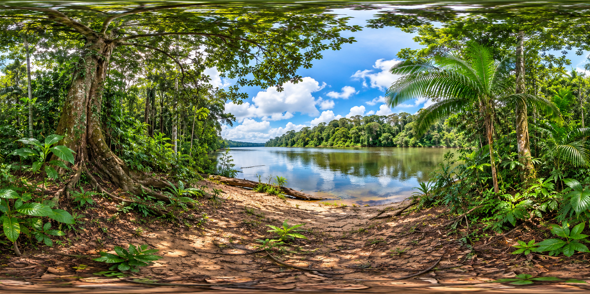
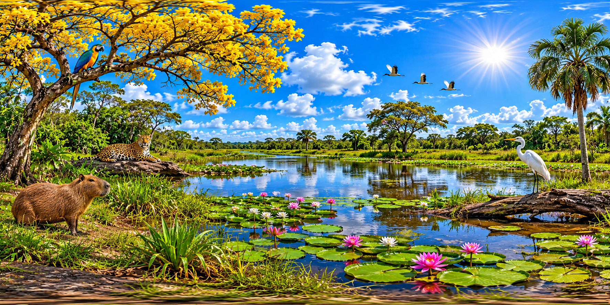
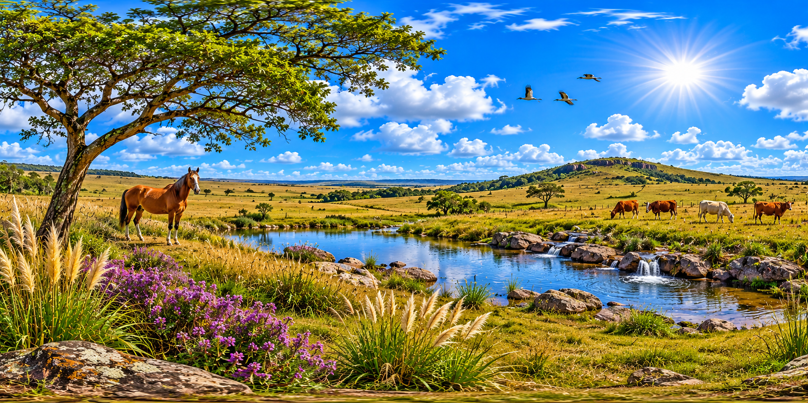
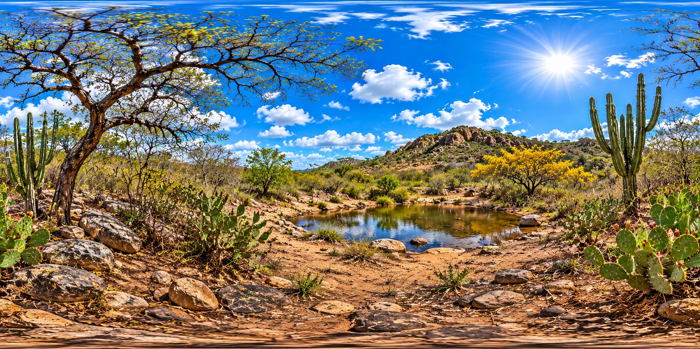
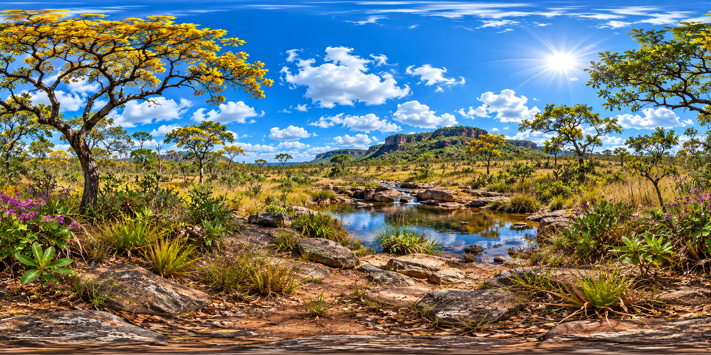

EXPLORE E INTERAJA
Toque nos marcadoresMapa dos biomas brasileiros
Amazônia Caatinga Cerrado Mata Atlântica Pantanal Pampa
Explore o mapa, descubra as riquezas naturais de cada bioma e mergulhe em uma jornada educativa, interativa e inesquecível!
Toque em uma região do mapa ou escolha um dos biomas para começar a explorar.
Escolha um cenário e comece sua expedição imersiva.





